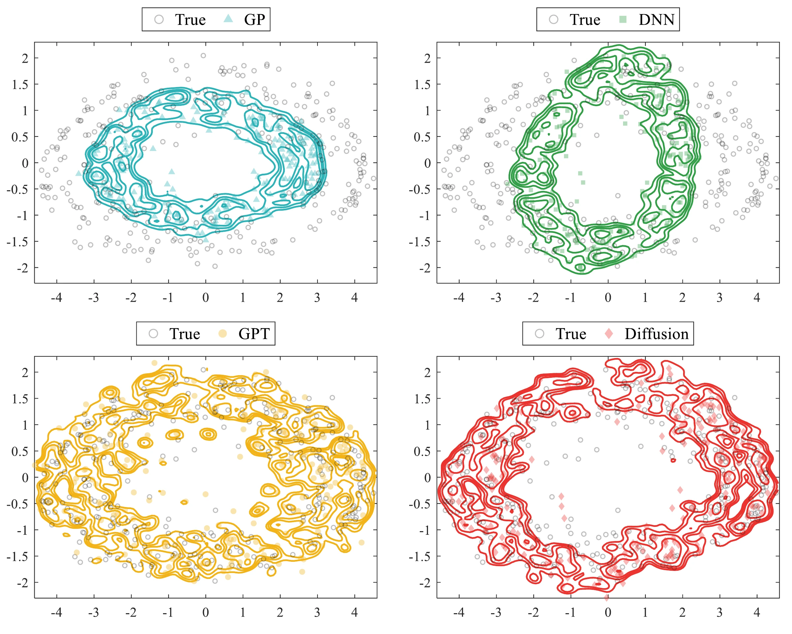

UAV SWARMS · IROS 2026
UAV Swarm Trajectory Prediction and Control
Diffusion-based 4D Trajectory Prediction and Distributed Control for UAV Swarms
- 1The Hong Kong University of Science and Technology (Guangzhou), China
- 2Southern University of Science and Technology, China and MoSense Technologies, China
- 3The Hong Kong University of Science and Technology (Guangzhou), China
- *Corresponding author
![Two pipelines, each starting from a photograph of UAVs in the sky above city buildings. (a) A conventional prediction-only forecasting module: a trajectory feature goes through a decoder, and the predicted regions of two UAVs overlap, marked as a potential collision. (b) The proposed pipeline: an axis-decoupled trajectory feature goes through a denoising head for residual-based refinement and yields separate reference trajectories for three UAVs. These go to distributed NMPC control, which sends an optimized control command; the actual status is fed back as the current status of each UAV.](assets/media/teaser.webp)
OVERVIEW
Trajectory prediction and formation control in one loop
A UAV swarm that holds a compact formation needs each aircraft to be at the right place at the right time: a 4D problem, 3D position plus time. Communication delay, downwash and other aerodynamic disturbances make the swarm's coupled motion hard to model, and most trajectory predictors are built and scored on their own, without control feedback. This work couples the two. A coarse forecast is made separately along each spatial axis, a diffusion model refines it by estimating the residual dynamics that the nominal model misses, and the refined rollouts go into a distributed nonlinear model predictive controller (DNMPC) that keeps the formation. The paper also introduces a dataset of synchronized three-UAV trajectories in six scenarios.
-
01
Axis-wise forecasting
Forecasting is factorized by dimension: key points and trajectories are predicted separately for x, y and z from one interaction-aware encoding, so that errors are not entangled across spatial dimensions.
-
02
Diffusion for the residual only
The diffusion model generates neither whole trajectories nor control actions. It samples the residual dynamics over a short horizon, the part that carries temporally correlated disturbances.
-
03
Distributed control with a stability bound
Each UAV solves its own NMPC problem with the estimated residual in its prediction model. Assuming recursive feasibility, the paper bounds the closed-loop tracking error by the residual-estimation error and the error in neighbours' predicted states.
-
04
A 4D swarm dataset
Over 7,900 frames of synchronized three-UAV trajectories across urban, lab, factory and rural scenarios, annotated per frame with speed intention and target sector.
METHOD
Coarse forecast, diffusion-refined residual, distributed NMPC
From the past 8 frames of observed positions the predictor forecasts the next 12, as key points at the 3rd, 6th, 9th and 12th steps that are interpolated into the NMPC reference trajectory. A diffusion model estimates the residual dynamics along the way, and each UAV's controller uses that estimate when it optimizes its control inputs under inter-UAV distance constraints.
![Framework from left to right. A 3D plot of observed trajectories of three UAVs among building blocks enters a trajectory encoder. Three parallel branches for x, y and z each contain key point extraction, an MLP encoder and a trajectory predictor, and output a coarse prediction curve per axis. A residual dynamics learning block combines a nominal model with a diffusion model that learns temporally correlated residuals from past positions and control inputs, under disturbances and unmodeled dynamics such as communication delay, inter-UAV airflow and downwash. It outputs refined per-axis predictions and a 3D plot of predicted reference trajectories, which feed a DNMPC control law with prediction horizon N that loops back to the residual block.](assets/media/framework.webp)
-
Decoupled trajectory predictor
The encoder of LBEBM extracts an interaction-aware feature from the observed history. Axis-specific predictors output key points for x, y and z; the key points are encoded into a compact structural descriptor, and each axis is then decoded independently from the feature and the descriptor.
-
Residual dynamics refinement
The quadrotor's translational dynamics are written with a nominal mass, and everything else is collected into a residual Δ, assumed bounded and locally Lipschitz. The diffusion model samples Δ over an estimation horizon T given positions, velocities, accelerations and control inputs. It is applied per UAV with parameters shared across the swarm.
-
Distributed NMPC
Each UAV solves a local NMPC problem over a horizon N ≥ T, with the residual estimate in its prediction model, to track its reference while keeping the desired distance to its neighbours. Only the first control input is applied at each step.
-
Real-time sampling
The noise predictor is a temporal U-Net with three residual stages, trained with 20 diffusion steps. DDIM sampling brings inference from 48 ms to 29 ms for 70 agents on an NVIDIA RTX 4070 GPU.
DATASET
Three UAVs in formation, six scenarios, recorded in flight
The paper introduces a 4D trajectory dataset collected from UAVs operating in real environments, recorded with positioning devices installed on the aircraft. In each of the six scenarios three UAVs follow predefined formations. It holds over 7,900 frames, 800 to 2,000 per scenario, and every frame is annotated with a speed intention and one of eight target sectors.
![Four plots of the same three UAV trajectories in the scenario U1-Dense, drawn as a solid blue, a dashed red and a dotted green line with circles at one end and squares at the other. (a) Orthographic projection over axes North, East and Height: the three lines run side by side at about 70 m, above grey building blocks up to about 60 m tall. (b) North against East: the lines weave across about 90 m of travel, a few metres apart. (c) North against Height: the lines stay near 70 m. (d) East against Height: the lines cluster within a few metres of each other above the buildings.](assets/media/dataset-trajectories.webp)
Scenarios
Mean inter-UAV distance ranges from 1.3 m indoors to 5.8 m in the sparse urban scenario, and mean speed from 2.4 to 5.6 m/s, covering both smooth cruising and sharper directional changes.
From Table I of the paper: scenario-wise trajectory statistics (mean ± std). U, L, F and R denote Urban, Lab, Factory and Rural scenarios. The per-scenario counts of speed-intention and target-sector labels are in the paper.
| Scenario | Frames | Inter-UAV distance (m) | Speed (m/s) | Turning intensity (1/m) |
|---|---|---|---|---|
| U1-Dense | 800 | 3.45 ± 0.18 | 3.20 ± 0.60 | 0.18 ± 0.10 |
| U2-Sparse | 1600 | 5.80 ± 0.22 | 4.10 ± 0.70 | 0.12 ± 0.08 |
| L1-Indoor | 1200 | 1.30 ± 0.15 | 2.40 ± 0.50 | 0.22 ± 0.12 |
| F1-Large | 1500 | 1.70 ± 0.25 | 4.80 ± 0.80 | 0.09 ± 0.06 |
| F2-Complex | 2000 | 1.55 ± 0.20 | 4.20 ± 0.75 | 0.15 ± 0.09 |
| R1-Open | 900 | 3.90 ± 0.30 | 5.60 ± 0.90 | 0.07 ± 0.05 |
RESULTS
Prediction accuracy, tracking error and formation keeping
Trajectory prediction is evaluated offline on the recorded dataset, with average and final displacement error (ADE, FDE). For control, the diffusion model (DM) is compared with a physics-driven DNMPC baseline and with Gaussian-process (GP), deep-neural-network (DNN) and GPT-based residual models. All learned models are trained on the same offline dataset and placed in the same control law, and each method is evaluated over 10 independent trials. The paper does not describe the platform on which the closed-loop runs were carried out, so they are not presented here as flight tests.
- Prediction · ADE / FDE
- 0.15 / 0.27
- With DDIM sampling, the lowest in the table. The best baseline values are 0.18 (UKF) and 0.33 (MTRTraj). Table II.
- Inference · 70 agents
- 29 ms
- About 34 FPS with DDIM sampling on an NVIDIA RTX 4070 GPU; 48 ms without it. Table II.
- Tracking error · Urban
- 0.066 m
- DM-NMPC; 0.055 m in Factory. The next-best controller, GPT-NMPC, has 0.075 m and 0.063 m. Table III.
- Formation RMSE · 10 m/s, 0.8 m
- 0.137 m
- DM-NMPC at the higher speed and the tighter reference distance; the other controllers range from 0.156 to 0.189 m. Table IV.
Trajectory prediction
The baselines span classical filters, deterministic sequence models and generative predictors, all modified to take 4D observed trajectories and predict 4D futures. With DDIM sampling the proposed predictor has the lowest ADE and FDE. Against the best baseline values in the table, ADE falls from 0.18 to 0.15 (16.7%) and FDE from 0.33 to 0.27 (18.2%), at 29 ms per inference.
Table II of the paper: trajectory prediction efficiency and accuracy on the dataset. All methods are evaluated on an NVIDIA RTX 4070 GPU with an input size of 70 × 8 × 3, where 70 is the number of agents predicted simultaneously. KF and UKF have no learnable parameters. Highlighted: the paper's best value in each column.
| Method | Efficiency | Accuracy ↓ | |||
|---|---|---|---|---|---|
| Params (M) | FLOPs (G) | Speed (ms) | ADE | FDE | |
| KF | – | 0.08 | 18 | 0.31 | 0.58 |
| UKF | – | 0.11 | 22 | 0.18 | 0.52 |
| TCN | 0.21 | 0.18 | 26 | 0.24 | 0.43 |
| MSRL | 0.62 | 0.14 | 20 | 0.23 | 0.41 |
| LBEBM | 1.31 | 0.12 | 15 | 0.20 | 0.36 |
| NPSN | 0.28 | 0.19 | 29 | 0.21 | 0.38 |
| GAN | 0.44 | 0.24 | 31 | 0.22 | 0.39 |
| CVAE | 0.58 | 0.27 | 34 | 0.20 | 0.36 |
| MTRTraj | 4.52 | 6.80 | 34 | 0.28 | 0.33 |
| Ours | 3.48 | 0.42 | 48 | 0.17 | 0.31 |
| Ours with DDIM | 3.48 | 0.26 | 29 | 0.15 | 0.27 |
Residual models inside the controller
The prediction error, in newtons, measures how well each model estimates the interaction-induced and environment-dependent disturbance forces between neighbouring UAVs, which the control law uses for compensation. The diffusion model has the lowest prediction and tracking errors in all four scenario types.
Table III of the paper: force prediction error (N) and tracking error (m) of DNMPC-based controllers with different residual models. U, L, F, R: Urban, Lab, Factory, Rural. Lower is better.
| Method | Prediction error (N) | Tracking error (m) | ||||||
|---|---|---|---|---|---|---|---|---|
| U | L | F | R | U | L | F | R | |
| GP-NMPC | 0.139 | 0.147 | 0.105 | 0.116 | 0.091 | 0.096 | 0.076 | 0.071 |
| DNN-NMPC | 0.128 | 0.140 | 0.096 | 0.108 | 0.081 | 0.089 | 0.069 | 0.064 |
| GPT-NMPC | 0.121 | 0.129 | 0.091 | 0.099 | 0.075 | 0.083 | 0.063 | 0.059 |
| DM-NMPC (ours) | 0.104 | 0.112 | 0.079 | 0.089 | 0.066 | 0.071 | 0.055 | 0.052 |
Formation keeping
The error of every method grows when the speed rises from 8 to 10 m/s. DM-NMPC has the lowest formation-constraint RMSE in all four settings and stays the most stable in the hardest one.
Table IV of the paper: formation-constraint RMSE (m) of NMPC variants under two reference inter-UAV distances dref and two flight velocities v. Lower is better.
| Method | dref = 1.2 m | dref = 0.8 m | ||
|---|---|---|---|---|
| v = 8 m/s | v = 10 m/s | v = 8 m/s | v = 10 m/s | |
| DNMPC | 0.118 | 0.146 | 0.156 | 0.181 |
| GP-NMPC | 0.123 | 0.152 | 0.162 | 0.189 |
| DNN-NMPC | 0.109 | 0.135 | 0.144 | 0.168 |
| GPT-NMPC | 0.101 | 0.124 | 0.133 | 0.156 |
| DM-NMPC (ours) | 0.089 | 0.107 | 0.118 | 0.137 |
What the residual model captures, and where it fails
Projected with t-SNE, the residuals estimated by the diffusion model follow the distribution of the residuals extracted from real-world flight data more closely than those of the GP, DNN and GPT predictors, particularly along the outer ring. In the failure case, short-term motion is captured, but prediction errors accumulate in highly curved segments where inter-UAV interactions intensify.

![Three views of three UAV trajectories over about 70 m of travel: an orthographic projection over North, East and Height, a North against Height view and an East against Height view. Black solid lines are the ground truth, which descends from about 41 m to about 38 m and climbs back. Dashed red, blue and green lines are the predictions: they follow the ground truth at first and drift apart in the curved final segment, where the green one rises to about 49 m. A red triangle joins the three predicted end points.](assets/media/failure-case.webp)
Further analysis and scope
Under Gaussian disturbances most learned compensators converge to a stable inter-UAV distance. Under heavy-tailed Cauchy disturbances the GP and DNN compensators show persistent oscillations or steady-state offsets, while diffusion-based compensation keeps the distance bounded (Fig. 4 of the paper). In a hovering task, tracking error first improves with a longer NMPC horizon and then degrades, and solver time per step exceeds the 50 ms real-time limit at N ≥ 32; a horizon of 8 to 16 is the most balanced (Fig. 5). Trained on the paper's dataset and evaluated on the public CityNav dataset without retraining, for open-loop prediction only, the method reaches an ADE of 0.86 m and an FDE of 1.44 m, against 0.97 m and 1.62 m for the next-best baseline (Table V).
The paper states the limits. The dataset and the experiments cover three-UAV formations; the DNMPC formulation sets no upper bound on swarm size and the residual model shares parameters across UAVs, but scaling to larger swarms remains future work. The residual model is trained under fixed formation assumptions and may not capture abrupt interaction changes or rare coordination patterns; adaptive interaction modeling and uncertainty-aware horizon adjustment are left to future work. The stability result assumes recursive feasibility of the DNMPC subproblems.
CITATION
@inproceedings{li2026diffusion,
title={Diffusion-based 4D Trajectory Prediction and Distributed Control
for UAV Swarms},
author={Tianshun Li and Hongliang Lu and Haoang Li and Xinhu Zheng},
booktitle={IEEE/RSJ International Conference on Intelligent Robots and
Systems (IROS)},
year={2026},
eprint={2606.31197},
archivePrefix={arXiv},
primaryClass={cs.RO},
url={https://arxiv.org/abs/2606.31197},
}